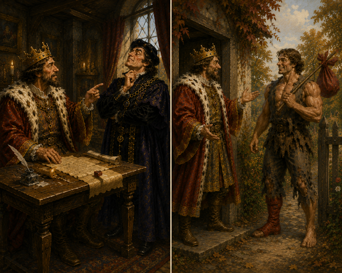
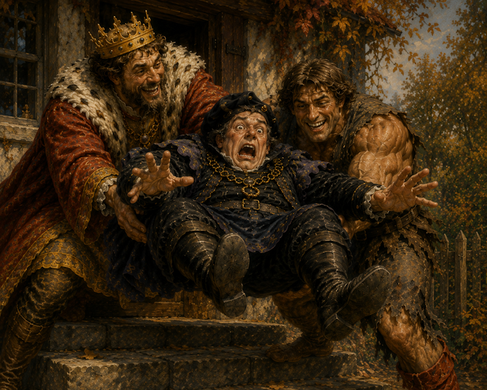
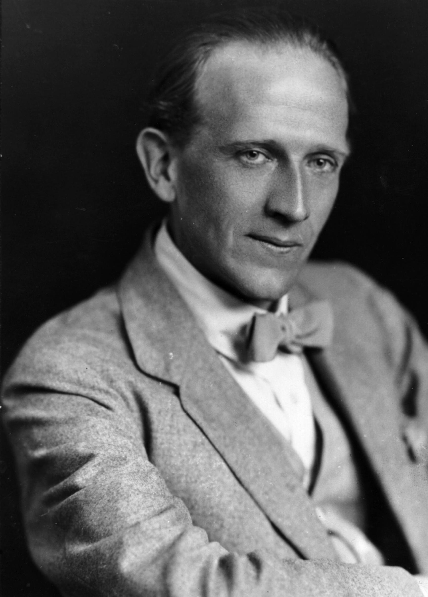
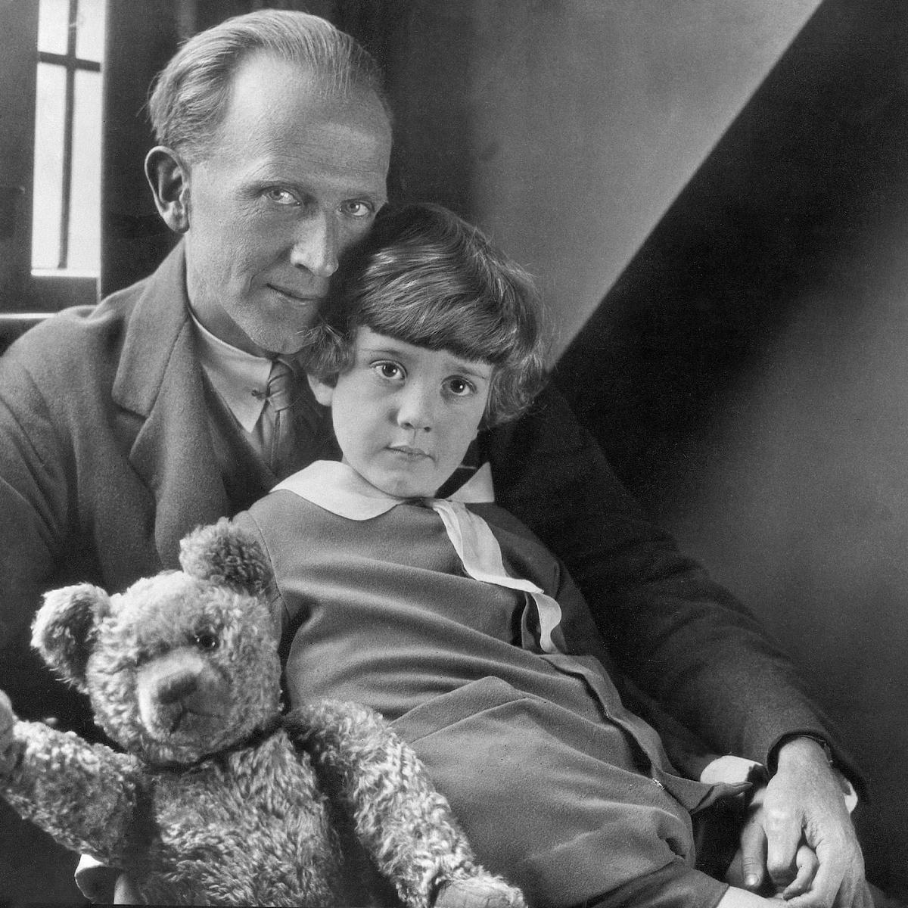
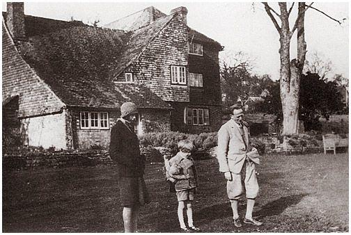
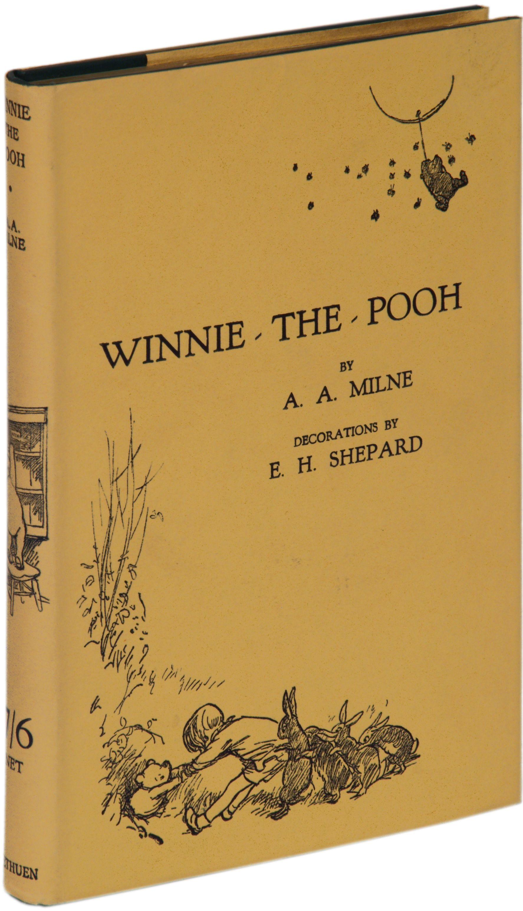

на главную страницу << >> English main page
>> English main page
Алан Александр Милн
(Alan Alexander Milne, 1882-1956)

| СЧАСТЛИВЧИК Неправильный дом |
Happiness The Wrong House |
БАЛЛАДА О КОРОЛЕ ХИЛЛАРИ,
ЛОРДЕ - КАНЦЛЕРЕ
И ДЫРЯВОМ НОСКЕ

,
Когда приходит Рождество,
Традиций древних торжество,
И мудрых сказок волшебство
Течет из уст в уста,
Я часто слышу сей рассказ.
Я записал его для вас
Я уместил его как раз
На четверти листа.
. . .
Старый добрый Хиллари
Говорит Канцлеру
Важному Канцлеру
Лорду Виллоубай:
"Сбегай к калитке
Быстро, быстро,
Сбегай к калитке,
Узнай, кто стучится.
Может это богач,
Или шейх арабский
Привез мне алмазы
И слоновую кость.
Может быть, сбежавший
Из неволи рабской
Принес апельсинов
Как вежливый гость."
Важный Канцлер
Лорд Виллоубай
Смеется ему в ответ:
"Нет, нет и нет.
Я с Милостью Вашей
Подробно знаком,
С тех пор, как кормили
Ее молоком.
И я никогда никуда не бежал,
А только ходил пешком."
Старый добрый Хиллари
Говорит Канцлеру
Важному Канцлеру
Лорду Виллоубай:
"Сходи к калитке
Быстро, быстро,
Сходи к калитке,
Узнай, кто стучится.
Может это капитан,
Бурями просолен,
Привез мне из Индии
Золотой песок,
Может это юноша,
Белокур и строен,
Принес мне от матушки
Пирога кусок."
Важный Канцлер
Лорд Виллоубай
Смеется ему в ответ:
"Нет, нет и нет.
Я в должности этой года и года.
Я не забываю ее никогда.
Окно открывал я частенько,
Калитку в саду - никогда."
Старый добрый Хиллари
Говорит Канцлеру
Важному Канцлеру
Лорду Виллоубай:
"Открой окошко
Быстро, быстро,
Открой окошко,
Глянь, кто стучится.
Может это девушка,
Молода, пригожа,
От своей хозяйки
Принесла привет,
Может это близнецы,
Как две капли схожи,
Принесли орехов,
Ягод и конфет."
Важный Канцлер
Лорд Виллоубай
Смеется ему в ответ:
"Нет, нет и нет.
С детских лет приставлен я
Ко двору,
Буду здесь я канцлером,
Пока не умру.
А в окно выглядывать
И детишек радовать -
Извините, мне не по нутру."
Старый добрый Хиллари
Не ответил Канцлеру,
А пошел к калитке,
Узнать, кто стучится.
Нет там ни шейха
Из стран арабских,
Нет капитана -
В руках подарки,
Нет там служанки розовощекой
А только нищий в дырявом носке.
Старый добрый Хиллари
Хлопает в ладоши
И обходит нищего
С трех сторон.
"Ты, я вижу, парень хороший.
Ступай во дворец
И будь моим канцлером.
А прежнего канцлера выгони вон!!!"
. . .
Я тоже слушал и внимал
И ничего не понимал.
А только помнил.
И долго голову ломал,
Пока не понял:
Здесь два урока - Первый: мерь
Все по делам. Словам не верь.
Когда судьба стучится в дверь,
Не бойся ей открыть.
Урок второй, для тех, кто тверд,
Хотя судьбой к стене приперт:
Ты нынче нищ, а завтра - лорд.
Лорд-Канцлер, может быть.
Перевел Яков Фельдман
Эрнст был слон большой и тяжёлый.
Лео был грозный лев.
Джордж был козёл с бородою жёлтой
И мелкой улиткой - Глеб.
У Лео была просторная клетка,
У Эрнста - большой навес.
Джордж обдирал молодые ветки,
А Глеб на ступеньку влез.
Эрнст затрубил, как сирена в полночь,
Лео рычал - аж дрожь.
Глеб испугался и звал на помощь,
Но его не услышал Джордж.
Эрнст успокоился, встал на коленки.
Лео полез под стул.
Глеб дополз до конца ступеньки
И Джордж наконец уснул.
Перевел Яков Фельдман
Ты откуда, ветер? И куда ты, ветер?
Кто же мне расскажет? Кто же мне ответит?
Даже если быстро-быстро с горки побежать,
Всё равно я ветер не смогу догнать.
Если я воздушный змей в небо запущу,
Если я у змея нитку отпущу,
Вот кто мне узнает, вот кто мне ответит,
Куда он улетает, куда он дует, ветер.
Только бы найти его, только бы догнать...
Но откуда дует ветер - это не узнать.
Перевел Яков Фельдман
ОТЧЕГО МЫШКА СОНЯ ТАК КРЕПКО СПИТ
Жил на грядке зверёк, на кроватке из трав,
Где дельфиний лилов и гераний кровав.
Был он счастлив глядеть,
любоваться без слов,
На гераний кровав и дельфиний лилов.
. . . . . . . . . .
Как-то Доктор по городу делал обход
"Вы в кровати, мой друг?
Целый день? Круглый год?"
Я пощупаю пульс. Я послушаю грудь.
Мне от ваших цветов беспричинная грусть."
Отвечал ему Соня, спокоен и твёрд:
"Я проверил цветы всевозможных пород.
И клянусь, что не знаю прекрасней цветов
Чем гераний кровав и дельфиний лилов".
Доктор взял свою шляпу, собрал саквояж.
"Мы вас вылечим. Только заменим пейзаж.
Пятьдесят хризантем. В бело-желтых тонах".
И ушёл, погружен, как буддийский монах.
Было ласковым солнце, а ветер суров.
Был гераний кровав и дельфиний лилов.
Был счастливым мышонок под сенью дубрав,
Где дельфиний лилов и гераний кровав.
. . . . . . .. .
Доктор скоро вернулся и кланялся всем.
Он с собою привёз пятьдесят хризантем.
"Я принёс вам - сказал он - целебнее трав,
Чем дельфиний лилов и гераний кровав."
Санитары его корчевали без слов
И гераний кровав и дельфиний лилов.
А потом посадили во вскопанный прах
Пятьдесят хризантем в бело-желтых тонах.
Доктор часто с тех пор приходил по утрам,
(Знать не спится у нас по утрам Докторам)
О новейших лекарствах тепло говорил,
Витамины давал, хризантемы хвалил.
. . . . . . . . . . . . .
Бедный Соня молчал и на грядке лежал.
Веки лапками он плотно-плотно прижал,
Чтоб не видеть, не думать,
не помнить, не знать
Пятьдесят хризантем в бело-желтых тонах.
Он лежал среди сна, среди милых цветов.
Был гераний кровав и дельфиний лилов.
И была ему пухом зелёным кровать,
Где дельфиний лилов и гераний кровав.
Перевел Яков Фельдман
Эммелин пропала. Она ушла
Неделю назад, а её всё нет.
На краю поляны есть два высоких ствола
Она прошла между ними,
а мы побежали вслед.
Эммелин, постой! Ничего плохого,
Просто руки с улицы надо мыть!
Мы искали её
с пяти до половины восьмого,
Но домой ни с чем возвратились мы.
Эммелин вернулась. Она пришла
В сумерках, через двенадцать дней,
Миновав те самые два ствола.
Мы увидели в сумерках и побежали к ней.
"Эммелин!
Эммелин, прошло полторы недели!
Что случилось с тобою? Где пропадала ты?"
"Пустяки, господа, я была у самой королевы
И она сказала, что руки мои чисты."
Перевел Яков Фельдман
Там, где листья водных лилий
Воду лили,
Спит - её качает рябь - кто там? кто там?
Дочь озёрного царя - вот так, вот так
Озеру качать её.
Кто сумеет взять её?
Смелей! Смелей!
Не смей... Не смей...
Дочь озёрного царя - кто ты? кто ты?
Взволновалась ветром рябь вот так, вот так.
Пробудилась - смех ей!
Кто поймать посмеет?
Заскользила вдоль по глади водной.
Постой! Постой!
Пустой, пустой
Пруд из водных лилий
Там, где лили,
Там, где ветры воду лили вот так, вот так...
Я видел дом
Это был замечательный дом.
Это было во сне,
Там вился плющ по стене.
Но там не было сада,
Совсем никакого сада,
А без этого дом не дом.
Я видел дом и за домом огромный сад
Из кустов и цветочных клумб и резных оград.
Но там не было дерева,
Цветущего майского дерева.
А без этого дерева сад не сад.
Я видел дом, а за домом огромный сад.
А в саду – цветущих яблонь белый наряд.
Но там не было птиц, поющих в ветвях о своем.
А без этого сад не сад, да и дом не дом.
Я видел дом и за домом огромный сад.
Там цветущих яблонь плыл густой аромат.
И там пели птицы о счастье и о любви
И роняли деревья как снег лепестки свои.
Я не помню, честно, горел ли в окошках свет.
Я не помню, правда, какой был у дома вид.
Но никто не пришел любоваться на майский цвет.
И никто не пришел волноваться на птичий свист.
Король однажды утром спросил у королевы
«Хорошо бы масла на кусочек хлеба!»
То есть даже не спросил, а подумал вслух.
К сожаленью во дворце не оказалось слуг.
Королева вздрогнула от таких капризов.
Не ждала от короля она таких сюрпризов.
И пошла к молочнице через скотный двор,
По дороге пролезая в щель через забор.
Юная молочница, сделав легкий книксен,
Пошла к своей корове, вздыхая на ходу.
»Здравствуйте, Буренка, что вам нынче снилось?
Как поживаете? Хау ду ю ду?
Очень вас просили король и королева
Про кусочек масла на кусочек хлеба!»
Корова глаза открыла, жевать перестала.
»С чего это им масло потребно стало?
Скажите им, что масло здоровью вредно.
Пусть возьмут мармелада или варенья.»
Молочница поколебалась, пошла обратно.
Конечно, спорить с начальством не так приятно,
Как с подчиненным, лежащим на ферме скотской.
(Но это уже не Милн, а скорее Бродский)
И юная молочница вернулась к королеве
И покраснев в смущении сказала невпопад.
»Я слышала по радио, что масло очень вредно.
Попробуйте варенье или мармелад.»
На это королева вздохнула с облегчением
И стопы направила обратно к королю.
»Ваше Величество, скушайте варенья!
Ваше Величество, как я вас люблю!»
Король воскликнул «Боже! Я не хочу варенья!
Это, что же - испытанье моего терпенья?
Или это заговор, мятеж, переворот?
Один кусочек масла мне на бутерброд!»
Бедняжка королева поняла ошибку,
Впопыхах состроила кислую улыбку
И пошла к молочнице через скотный двор,
По дороге пролезая в щель через забор.
Юная молочница поняла ошибку,
Впопыхах состроила кислую улыбку
И пошла к Буренке, вздыхая на ходу:
»Здравствуйте, Буренка, хау ду ю ду?»
Глупая корова приоткрыла глазки.
Что она подумала не для этой сказки.
Но делать видно нечего – приходится вставать
И молоко и масло народу отдавать.
Мораль у этой сказки,
Как видно, такова:
Если хочешь масла –
Качай свои права.
В спальне за шторой кто-то живет.
Я думаю – это он.
В коричневой шляпе и сером пальто,
Маленький рыжий гном.
Я понимаю, что это гипотеза,
А не научный факт.
Но когда я за штору – он наутек.
И проверить не знаю как.
Если бы я был королем
Я потакал бы себе во всем!
Был бы я был королем Франции -
Ходил бы в школу без ранца.
Был бы я был королем Испании -
Играл бы в маминой спальне.
Был бы я королем Норвегии -
Без ботинок по лужам бегал бы.
Был бы я королем Камчатки -
Не застегивал бы перчатки.
Был бы султаном Турции -
Рвал бы на клумбах настурции.
Или султаном страны Тунис -
И кричал бы солдатам: «Посторонись!»
Мне не нравится взрослое «Не ходи»
И не нравится «Держи меня за руку».
Мне не нравится взрослое «Посиди!»
И не нравится «Мы не пойдем на реку»
Но взрослые глупы железно
И им говорить бесполезно.
Кристофер Робин подпрыгивает
И ногой при этом подрыгивает.
И когда я прошу его вежливо
Отказаться от способа прежнего
Он отвечает так:
Если он перестанет подпрыгивать
И ногой при этом подрыгивать,
То ему не уйти ни на шаг.
Вот почему он подпрыгивает
И ногой при этом подрыгивает.
Вот так.
Выглянуло солнце
Из-за облаков
На соседней ферме
Родилось восемь щенков.
И можно услышать море
Если хранить покой
И я видел вчера капитана -
Пирата с одной рукой.
Но взрослым все время некогда,
Они говорят «Скорей!
Кушай и одевайся!
Не загромождай дверей!»
Они говорят «красавчик!»
Повернувшись ко мне спиной.
Но никто меня не слушает
И никто не пойдет со мной.
Вечер. Осенний ветер
Колышет листья травы.
Мельничные колеса
Черны и давно мертвы.
И я видел вчера как муха
Утонула в реке поутру.
И я точно знаю, где кролики
Ныряют в свою нору.
Но взрослым все время некогда….
У меня есть пенни,
Блестящий пенни.
Я беру этот пенни с собой на рынок.
Мне нужен кролик,
Пушистый кролик,
Маленький рыжий пушистый кролик.
Я ищу его всюду, на рынке тоже.
На рынке стоит продавец лаванды.
»Возьмите за пенни пучок лаванды!»
Но мне не нужна лаванда,
Мне нужен кролик.
У меня есть два пенни,
Блестящих пенни.
Я иду на рынок, мне нужен кролик.
На рынке в лавке - живая рыба.
»За два пенни – блестящий хвостик!»
Но мне не нужно рыбы, мне нужен кролик.
Я нашел шесть пенни одной монеткой
Я иду на рынок, мне нужен кролик.
У самых ворот продают кастрюльки
«За шесть пенсов – одна кастрюлька!»
Но мне нужгна кастрюлька, мне нужен кролик.
Я иду с рынка и что я вижу?
В парке, на грядке – пушистый кролик!
И сестры его, и друзья, и братья!
Бедные, бедные рыночные торговцы!
Нет у вас кроликов, и никогда не будет!
В зоопарке есть львы
И большие тигры.
Там большие медведи
Играют в игры.
Там гипопотамы и носороги.
Но мимо них по большой дороге
Я иду к слону.
Я несу ему булочку
Одну и еще одну.
В зоопарке есть самые
Разные мыши.
И дом интенданта
С покатой крышей.
И еще обезьяны.
Но я с друзьями
Иду к слону.
Я несу ему булочку
Одну и еще одну.
Говорить с бизоном -
Пустое дело.
Он не двинет для вас
Свое тучное тело.
И с фламинго поздороваться
Вам не удастся -
Они не пустят вас
В свое пернатое братство.
А львы и медведи глядят сурово,
И, мимо них, не сказав ни слова,
Я иду к слону.
Я несу ему булочку
Одну и еще одну.
Когда нам будем сорок лет,
Какими будем мы?
Пока не начался обед,
Займем свои умы
Серьезными вещами.
А беседа
О собаке соседа
И колесах велосипеда
Будет после обеда,
Как обещали.
Здравствуйте, здавствуйте!
Вы со мною вежливы, и я с вами тоже.
И я тоже соблюдаю правила общения.
Но так иногда хочется, ввиде исключения,
Не увидеть вежливой вашей рожи…
Кристофер Робин читает молитву на ночь.
Мальчик обыкновенный, в меру послушный.
Он стоит на коленках возле своей кроватки.
Мешать ему нельзя, но можно подслушать.
Прости меня, Всевышний,
Что я весь день шалил:
Сломал перо, порвал пальто
И супницу разбил.
И пожалей, Всевышний,
Родителей моих,
Что я такой
У них такой
Один такой у них.
И посмотри, Всевышний,
Где я сейчас стою
И дай благословение
На всю мою семью.
Кристофер Робин читает молитву на ночь.
Мальчик обыкновенный, в меру послушный.
Он стоит на коленках возле своей кроватки.
Мешать ему нельзя, но можно подслушать.
Мой мышонок удрал
Прямо из коробки.
Он такой проворный.
Я такой неловкий.
Чем он будет питаться?
Вы не видели его? И не трогали?
Такому как он, из деревни,
Легко заблудиться в Лондоне.
Он сидел у меня в коробке
И выпрыгнул без труда.
Неужели мы не увидимся с ним
Никогда? Никогда? Никогда?
Как мне назвать моего сонмышонка?
Кратко или долго? Глухо или звонко?
Назову его Джек.
Он совсем как человек.
Назову его Джон,
Весь такой забавный он.
Назову его Джеймс.
Он такой забавный весь.
Но я зову его «Джим»
И засыпаю вместе с ним.
Первый стул – Южная Америка.
Второй стул – корабль морской.
Третий стул – львиная клетка.
Четвертый - обычный – мой.
Вверх по Амазонке –
На плече ружье -
Я стреляю – созываю
Друзей в свое жилье.
Между деревьями
Прячутся индейцы.
Близко подбираются -
Поиграть надеются.
Но если я не в духе -
Подам им знак рукой.
Они не станут спорить,
А пойдут домой.
Корабль плывет в океане,
И мимо плывут корабли.
Грохочут огромные волны -
За ними не видно земли.
Моряк, проплывающий мимо,
Ко мне наклоняется он.
«Доеду ли так до Африки?»
Кричит он сквозь грохот волн.
Я лев! Я в клетке! Я ррычу!
Я няню напугать хочу.
Но если сильно напугать
(Няня, берегись!)
Придется крепко обнимать
(Няня, не сердись!)
Когда я в столовой за завтраком,
За обедом или за ужином,
Я стараюсь быть просто мальчиком.
Трехлетним, слегка простуженным.
А львы, и индейцы и волны,
За дверью толпятся, безмолвны.
Я не вверху
И не внизу,
Посередине я сижу,
На самой серединке,
Ступеньке-половинке.
Она – единственная,
Моя, таинственная.
Я не вверху
И я не внизу,
Проносятся мысли
В моем мозгу
Что я насовсем исчез!
А я на нее залез
Таинственную,
Единственную,
Мою.
Они всегда меня спрашивают
Когда я возвращаюсь домой
»Ты была там хорошей девочкой?»
(Господи Боже мой!)
Возвращаюсь с прогулки вечером,
Или с каникул у моря -
Для меня у них приготовлен -
Один и тот же вопрос:
»Ты была там хорошей девочкой?»
»Ты была там хорошей девочкой?»
Неужели они надеются,
Что я отвечу всерьез?
Вернувшись из зоопарка
Все тот же вопрос я слышу.
А если я не была хорошей -
Что мне ответить им?
Но эта «игра по правилам» -
Вечная, очень прочная.
И этот порядок в мире,
Видимо, неколебим.
За окном туман и дождь.
Скоро девять.
Ты сидишь и солнца ждешь.
Что же делать?
Поиграем в стадион.
Это Джеймс, а это Джон -
Две огромных капли
В маленьком спектакле
На стекле оконном -
Поле стадионном!
Джеймс застрял на старте,
Джон рванулся вниз -
Там где победителя
Ожидает приз.
Но Джон связался с мухой
И замедлил ход.
Джеймс сейчас его догонит, -
Слева обойдет!
Победитель! Молодец!
Вот и солнце, наконец…
У меня есть домик, где я один.
Там никто не скажет мне «выходи!»
Там никто не скажет мне «уходи!»
Потому, что я там всегда один
Я съел свой ужин и сказку выслушал,
Почистил зубы, прочел молитву.
Теперь я один.
Я лечу как ветер, куда хочу.
Любое дело мне по плечу.
Вокруг меня – драконы и кролики.
Я с ними играю в крестики-нолики.
Вокруг меня – медведи и зайцы.
Справа – индусы, слева – китайцы.
Мне им так много надо сказать,
В разные игры с нимим сыграть.
Но хватит ли мне азарта?
Завтра, завтра, завтра.
Перевел Яков Фельдман
   
До появления книг о Винни-Пухе Милн был известен как автор:
Всего написал более 40 книг и около 20 пьес, однако почти вся мировая известность связана именно с Винни-Пухом.
© 2001 Elena and Yakov Feldman